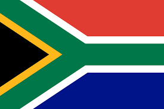
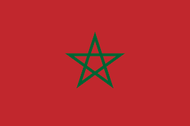
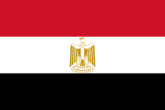
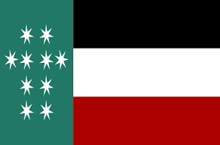
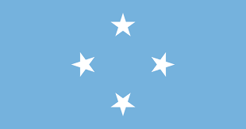
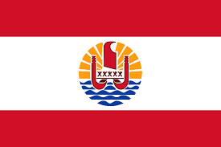
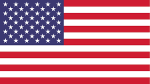

| Europa | Asia | Africa | Oceania | Cristobal Colon |
|---|---|---|---|---|
| Alemania | china | Burundi | Australia | Mexico |
| España | Rusia | Sudafrica | Nueva Zelanda | Brasil |
| Portugal | India | Guinea Ecuatorial | Melanesia | Colombia |
| Inglaterra | Indonesia | Marruecos | Micronesia | Estados Unidos |
| Francia | Qatar | Egipto | Polinesia | Canada |
Alemania es un país de Europa occidental con un paisaje de bosques, ríos, cadenas montañosas y playas en el mar del Norte.

España, país de la península ibérica de Europa, incluye 17 regiones autónomas con diversas características geográficas y culturales. En Madrid, su capital, se encuentra el Palacio Real y el Museo del Prado, que alberga obras de maestros europeos.

Portugal es un país del sur de Europa en la península ibérica, que limita con España. Su ubicación en el océano Atlántico influyó en muchos aspectos de su cultura: el bacalao en sal y las sardinas a la parrilla son platos nacionales, las playas del Algarve son un importante destino y gran parte de la arquitectura de la nación data de los siglos XVI al XIX.

Inglaterra, la cuna de Shakespeare y The Beatles, es un país de las Islas Británicas que limita con Escocia y Gales. La capital, Londres, se ubica en el río Támesis y cuenta con el Parlamento, el Big Ben y la Torre de Londres del siglo XI.

Francia, en Europa Occidental, abarca ciudades medievales, villas alpinas y playas mediterráneas. París, su capital, es famosa por sus firmas de alta costura, los museos de arte clásico, como el Louvre, y monumentos como la Torre Eiffel.

China es una nación muy poblada de Asia Oriental cuyos vastos paisajes abarcan praderas, desiertos, montañas, lagos, ríos y más de 14,000 km de costa. La capital, Pekín, mezcla la arquitectura moderna con los sitios históricos como el complejo del palacio de la Ciudad Prohibida y la plaza de Tiananmén.

Rusia es la nación más grande del mundo y limita con países de Europa y Asia, al igual que con los océanos Pacífico y Ártico. Su paisaje va de la tundra y el bosque a las playas subtropicales. Es famosa por las compañías de ballet Bolshói de Moscú y Mariinski de San Petersburgo. San Petersburgo, fundada por el líder ruso Pedro el Grande, tiene el Palacio de Invierno de estilo barroco que actualmente alberga parte de la colección de arte del Museo del Hermitage Estatal.

La India es un vasto país de Asia del Sur con un terreno diverso que abarca desde las cumbres del Himalaya hasta la costa del océano Índico. Tiene una historia de más de 5 milenios.

La India es un vasto país de Asia del Sur con un terreno diverso que abarca desde las cumbres del Himalaya hasta la costa del océano Índico. Tiene una historia de más de 5 milenios.

Qatar, cuyo nombre oficial es Estado de Qatar, es un Estado soberano árabe ubicado en el oeste de Asia que ocupa la pequeña península homónima en el este de la península arábiga.
Burundi, oficialmente República de Burundi, es un pequeño Estado soberano, ubicado en la región de los grandes lagos en África Oriental, que carece de salida al mar. Limita al norte con Ruanda, al sur y este con Tanzania, y al oeste con la República Democrática del Congo.

Sudáfrica es un país del extremo más meridional del continente africano que se caracteriza por sus numerosos ecosistemas distintos. En el interior, el Parque Nacional Kruger es un destino para el safari, poblado de caza mayor.
Sudáfrica es un país del extremo más meridional del continente africano que se caracteriza por sus numerosos ecosistemas distintos. En el interior, el Parque Nacional Kruger es un destino para el safari, poblado de caza mayor.

Marruecos es un país de África del Norte que limita con el océano Atlántico y el mar Mediterráneo, y se distingue por las influencias culturales bereberes, árabes y europeas. La medina de Marrakech es un barrio medieval similar a un laberinto con entretenimiento en su plaza de Yamaa el Fna y los zocos (mercados) que venden cerámicas, joyas y lámparas de metal.
Egipto, país que une el noreste de África con Medio Oriente, data del período de los faraones. Tiene monumentos de milenios de antigüedad ubicados junto al fértil valle del río Nilo, incluidas las colosales pirámides de Guiza y la Gran Esfinge, al igual que las tumbas del Valle de los Reyes y el Templo de Karnak bordeado de jeroglíficos en Luxor.
Australia es un país rodeado por los océanos Índico y Pacífico. Sus ciudades principales (Sídney, Brisbane, Melbourne, Perth y Adelaida) son costeras. Su capital, Canberra, se encuentra en el interior.

Nueva Zelanda es un país en el suroeste del océano Pacífico, que comprende dos islas principales, ambas marcadas por los volcanes y la glaciación. En la capital, Wellington, en la Isla Norte, se encuentra el extenso museo nacional Te Papa Tongarewa.

Melanesia es una de las veintidós subregiones geográficas en que la ONU divide el mundo con fines estadísticos, y una de las cuatro pertenecientes a Oceanía.
Los Estados Federados de Micronesia, o simplemente Micronesia, son un Estado soberano insular en la región de Micronesia, cuya forma de gobierno es la república federal democrática.
La Polinesia es una gran agrupación de más de mil islas en el Pacífico central y meridional, una división del continente oceánico. Geográficamente conforma un triángulo a cuyos ángulos están situadas las Islas Hawái, Nueva Zelanda y la Rapa-Nui.
México es un país entre los Estados Unidos y América Central, conocido por las playas en el Pacífico y el golfo de México, y su diverso paisaje de montañas, desiertos y selvas. Las ruinas antiguas, como Teotihuacán y la ciudad maya de Chichén Itzá, se distribuyen por el país, al igual que las ciudades de la época colonial española. En la capital Ciudad de México.

Brasil es un vasto país de Sudamérica que se extiende desde la Cuenca del Amazonas en el norte hasta los viñedos y las enormes cataratas del Iguazú en el sur. Río de Janeiro, simbolizado por su estatua de 38 m del Cristo Redentor sobre el cerro del Corcovado, es famoso por sus ajetreadas playas Copacabana e Ipanema, junto con su enorme y estridente festival del Carnaval, que cuenta con carros alegóricos, exuberantes disfraces y danza y música samba.

Colombia es un país del extremo norte de Sudamérica. Su paisaje cuenta con bosques tropicales, las montañas de los Andes y varias plantaciones de café. En Bogotá, su capital a gran altura, el distrito Zona Rosa es famoso por sus restaurantes y tiendas. Cartagena, en la costa del Caribe, tiene una Ciudad Antigua colonial amurallada, un castillo del siglo XVI y arrecifes de coral cercanos.

Estados Unidos es un país de 50 estados que ocupa una extensa franja de América del Norte, con Alaska en el noroeste y Hawái que extiende la presencia del país en el océano Pacífico. Entre las principales ciudades de la costa del Atlántico, se encuentran Nueva York, un centro global financiero y cultural, y la capital Washington D. C. Chicago, metrópolis del medio oeste, es famosa por su influencia arquitectónica y, en la costa oeste, Hollywood, Los Ángeles, es famosa por la industria cinematográfica.
Canadá es el país norteamericano que se extiende desde los Estados Unidos en el sur hasta el círculo polar ártico en el norte. Las ciudades principales incluyen la enorme Toronto, Vancouver, el centro cinematográfico de la costa oeste, las ciudades de habla francesa Montreal y Quebec, y la capital Ottawa. Las vastas franjas de naturaleza de Canadá incluyen el Parque Nacional Banff ubicado en un lago en las Montañas Rocosas. También incluye las cataratas del Niágara, un famoso grupo de enormes cascadas.